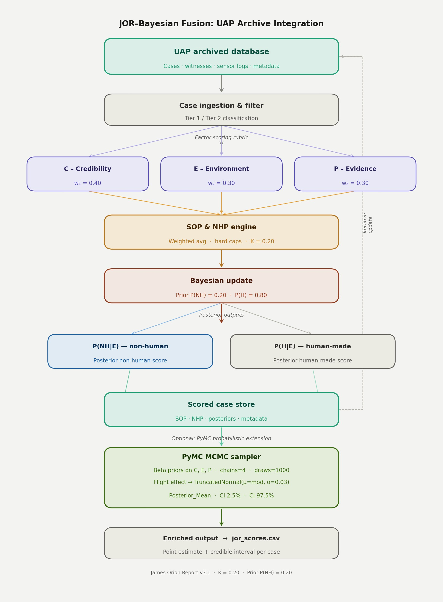
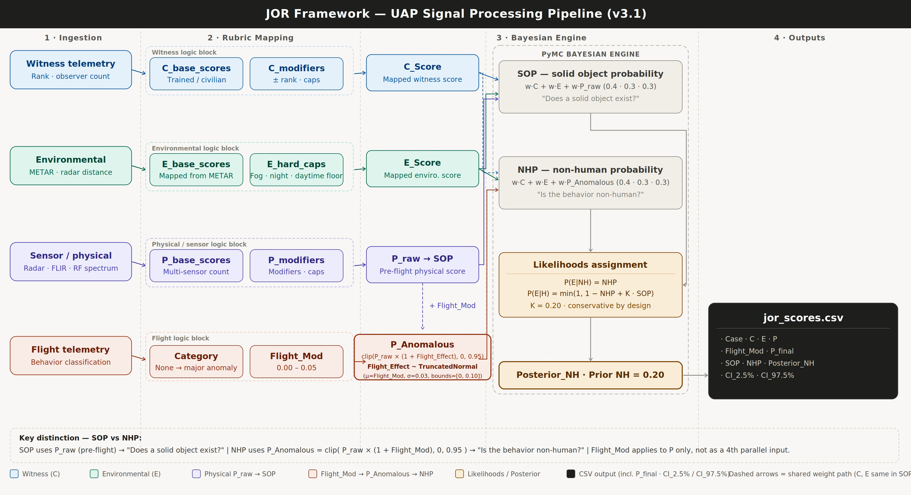
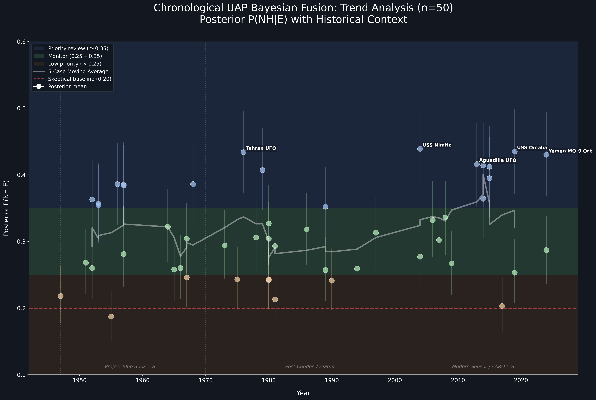
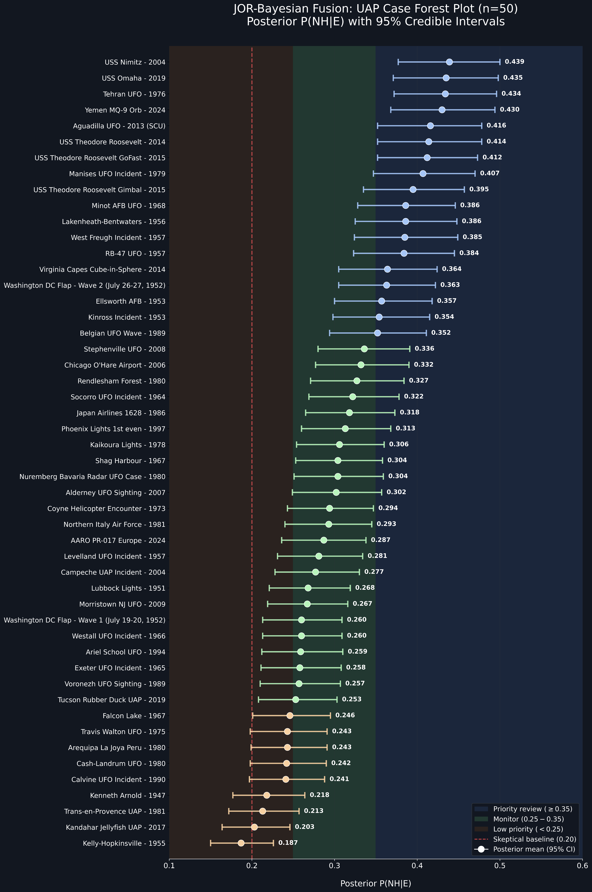
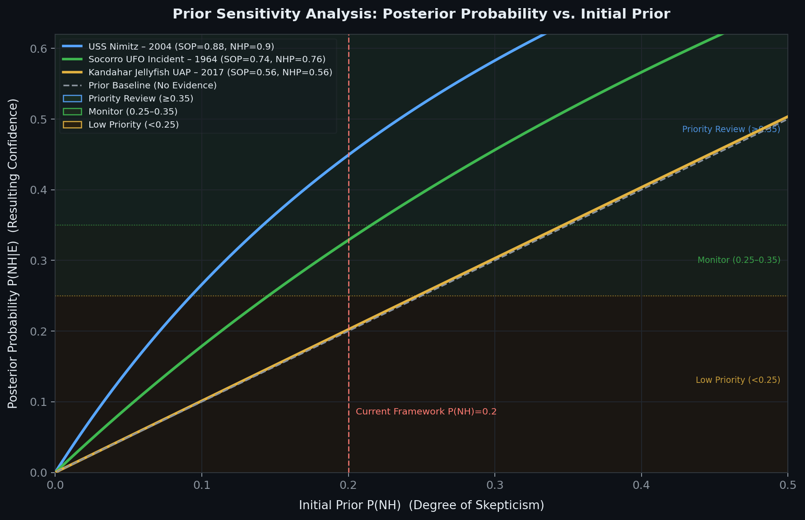
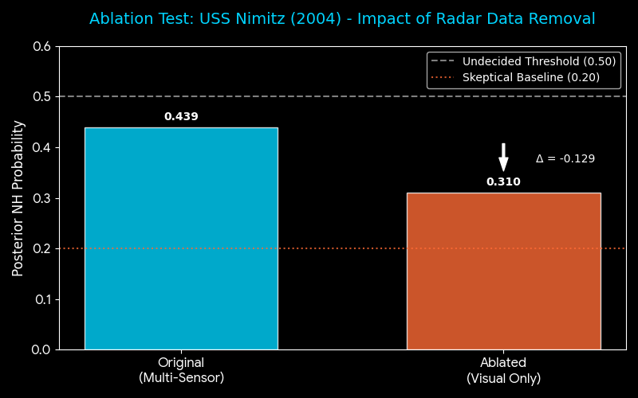

◈ FUTURE-STATE UAP ARCHIVE & SIGNAL PIPELINE (V3.1)

FIG 0A: ARCHIVE INTEGRATION & END-TO-END DATAFLOW
Structural map of the ingestion-to-output pipeline. Illustrates the initial Tier 1/Tier 2 classification filtering into weighted C, E, and P metrics (w₁ = 0.40, w₂ = 0.30, w₃ = 0.30).
DATAFLOW REFINEMENT: Shows the deterministic SOP/NHP calculations passing into the core Bayesian update stage, which triggers the optional PyMC MCMC sampler (4 chains, 1000 draws). The stochastic flight effect is injected here via a Truncated Normal distribution (μ = mod, σ = 0.03) to spit out the finalized 95% credible intervals in
Structural map of the ingestion-to-output pipeline. Illustrates the initial Tier 1/Tier 2 classification filtering into weighted C, E, and P metrics (w₁ = 0.40, w₂ = 0.30, w₃ = 0.30).
DATAFLOW REFINEMENT: Shows the deterministic SOP/NHP calculations passing into the core Bayesian update stage, which triggers the optional PyMC MCMC sampler (4 chains, 1000 draws). The stochastic flight effect is injected here via a Truncated Normal distribution (μ = mod, σ = 0.03) to spit out the finalized 95% credible intervals in
jor_scores.csv.

FIG 0B: PROBABILISTIC LOGIC & LIKELIHOOD ENGINE
Granular trace of signal processing through the framework's parallel logic blocks (Witness, Environmental, Sensor/Physical, and Flight Telemetry).
CRITICAL ARCHITECTURAL DISTINCTION:
Granular trace of signal processing through the framework's parallel logic blocks (Witness, Environmental, Sensor/Physical, and Flight Telemetry).
CRITICAL ARCHITECTURAL DISTINCTION:
- ▷ SOP Engine: Evaluates "Does a solid object exist?" utilizing pre-flight physical scores (P_raw).
- ▷ NHP Engine: Evaluates "Is the behavior non-human?" by passing P_raw through a stochastic Flight Modifier block to yield P_Anomalous.
- ▷ Likelihood Bounds: Explicitly maps how the conservative K = 0.20 constant penalizes the human-made likelihood P(E|H) based on solid object probability, ensuring rigorous protection against narrative over-attribution.
◈ CASE ANALYSIS & COMPARISONS (V3.1)

FIG 01: Chronological 50 Cases - (1947-2024)
Displays the temporal distribution of 50 UAP cases analyzed under JOR V3.1 (1947–2024). Each case is plotted chronologically with corresponding Posterior NH values, illustrating long-term consistency in probabilistic outcomes.
V3.1 Update: Flight behavior is now modeled as a probabilistic distribution rather than a fixed modifier, introducing uncertainty-aware adjustments to Physicality (P) across all cases.
Displays the temporal distribution of 50 UAP cases analyzed under JOR V3.1 (1947–2024). Each case is plotted chronologically with corresponding Posterior NH values, illustrating long-term consistency in probabilistic outcomes.
V3.1 Update: Flight behavior is now modeled as a probabilistic distribution rather than a fixed modifier, introducing uncertainty-aware adjustments to Physicality (P) across all cases.

FIG 02: Forest Plot of 50 UAP Cases - (1947-2024)
Forest plot visualization of 50 UAP cases showing Posterior Mean estimates with 95% credible intervals. This format highlights uncertainty bounds across cases and demonstrates how higher NHP values are typically associated with broader interval ranges.
V3.1 Update: Credible intervals reflect the incorporation of stochastic flight anomaly modeling, where flight characteristics are treated as a bounded distribution rather than a deterministic input.
Forest plot visualization of 50 UAP cases showing Posterior Mean estimates with 95% credible intervals. This format highlights uncertainty bounds across cases and demonstrates how higher NHP values are typically associated with broader interval ranges.
V3.1 Update: Credible intervals reflect the incorporation of stochastic flight anomaly modeling, where flight characteristics are treated as a bounded distribution rather than a deterministic input.

FIG 03: PRIOR SENSITIVITY & CONVERGENCE ANALYSIS
This test tracks how the resulting confidence (Posterior) responds to varying levels of initial skepticism (Prior 0.01 to 0.50).
EVIDENTIARY TIER ANALYSIS:
This test tracks how the resulting confidence (Posterior) responds to varying levels of initial skepticism (Prior 0.01 to 0.50).
EVIDENTIARY TIER ANALYSIS:
- ▷ TIER 1 (HIGH GAIN): USS Nimitz (2004). High-quality sensor data "overcomes" extreme skepticism, forcing a steep upward update in the posterior.
- ▷ TIER 2 (MODERATE): Socorro (1964). Displays "conservative anchoring"—requiring a higher initial prior to reach significant confidence zones.
- ▷ TIER 3 (LOW PRIORITY): Kandahar (2017). Tracks the baseline. The framework refuses to inflate probability when evidence signal is weak.
- ▷ ROBUSTNESS PROOF: Confirms that the K=0.20 constant effectively biases the system against over-attribution unless the signal is exceptionally strong.

FIG 04: ABLATION STRESS TEST (SENSOR DEPRIVATION)
This test measures the "telemetry premium" by simulating the Nimitz case with all radar/instrument data removed, leaving only witness testimony.
STRESS TEST ANALYTICS:
This test measures the "telemetry premium" by simulating the Nimitz case with all radar/instrument data removed, leaving only witness testimony.
STRESS TEST ANALYTICS:
- ▷ CONTROL (MULTI-SENSOR): Baseline Posterior of 0.439 using radar telemetry + visual confirmation.
- ▷ ABLATED (VISUAL ONLY): Dropping Physicality (P) from 0.90 to 0.40 crashes the Posterior to 0.310.
- ▷ LOGIC VALIDATION: The -0.129 delta proves the framework is evidence-dependent. It prevents "narrative inflation" by anchoring the result to the skeptical baseline when sensor data is absent.
◈ CASE ANALYSIS & COMPARISONS (V3.0)

FIG 01: AGUADILLA (2013) ANALYSIS
Displays Raw NHP (0.870) vs. Posterior Mean (0.449) against the 0.50 Undecided Threshold.
Displays Raw NHP (0.870) vs. Posterior Mean (0.449) against the 0.50 Undecided Threshold.

FIG 02: CROSS-CASE STATISTICAL SIMILARITY
Comparative metrics for Westall (1966) and Ariel School (1994) showing near-identical Bayesian Posteriors (0.27).
Comparative metrics for Westall (1966) and Ariel School (1994) showing near-identical Bayesian Posteriors (0.27).

FIG 03: WASHINGTON D.C. (1952) WAVE COMPARISON
Bayesian analysis of the two consecutive 1952 waves. Wave 2 (0.401) registers higher NHP than Wave 1 (0.291) with broader credible intervals.
Bayesian analysis of the two consecutive 1952 waves. Wave 2 (0.401) registers higher NHP than Wave 1 (0.291) with broader credible intervals.
◈ GLOBAL DISTRIBUTION & CREDIBLE INTERVALS

FIG 04: MULTI-CASE POSTERIOR MEANS
Comprehensive map of UAP incidents plotted against Probability Zones (Low/Medium/High) and the 0.20 Skeptical Baseline.
Comprehensive map of UAP incidents plotted against Probability Zones (Low/Medium/High) and the 0.20 Skeptical Baseline.
◈ FRAMEWORK SENSITIVITY & ROBUSTNESS

FIG 05: SCENARIO WEIGHTING IMPACT
Visualizing how varying Credibility (C) and Physical (P) weights influences the final Posterior NHP.
Visualizing how varying Credibility (C) and Physical (P) weights influences the final Posterior NHP.

FIG 06: SENSITIVITY DATA MATRIX
Tabular breakdown of base scores and weights demonstrating framework robustness under extreme physical scenarios.
Tabular breakdown of base scores and weights demonstrating framework robustness under extreme physical scenarios.
◈ BAYESIAN LEARNING (PRIOR VS. POSTERIOR)

FIG 07: CASE DEEP-DIVE (USS NIMITZ 2004)
This visual demonstrates the core robustness of the JOR-Fusion logic: the ability to update beliefs based on evidence.
ANALYSIS OF THE UPDATE:
This visual demonstrates the core robustness of the JOR-Fusion logic: the ability to update beliefs based on evidence.
ANALYSIS OF THE UPDATE:
- ▷ THE PRIOR (ORANGE): Represents the 0.20 Skeptical Baseline. This is the model’s starting assumption—that any given case is likely explainable by mundane factors.
- ▷ THE POSTERIOR (BLUE): After processing the high Credibility (0.90) and Physicality (0.95) scores for the Nimitz case, the model shifts its conclusion to 0.486.
- ▷ ROBUSTNESS PROOF: Even with a heavily skeptical starting point, the framework is mathematically forced to update toward the "Undecided" threshold (0.50) when confronted with multi-sensor, multi-witness data.
◈ STATISTICAL INTERDEPENDENCE

FIG 08: CORRELATION MATRIX (N=50)
A statistical breakdown of how JOR inputs drive the PyMC Bayesian outputs across the 50-case dataset.
KEY ANALYTICS:
A statistical breakdown of how JOR inputs drive the PyMC Bayesian outputs across the 50-case dataset.
KEY ANALYTICS:
- ▷ PRIMARY DRIVERS: The Posterior Mean is most heavily tethered to Physicality (0.86) and Credibility (0.80), indicating that anomalous flight behavior and witness reliability are the strongest predictors of NH probability.
- ▷ ENVIRONMENTAL VARIANCE: Environmental Conditions (0.46) show the weakest correlation. This suggests that while clear visibility is preferred, the model prioritizes "high-strangeness" physical data (P) over simply having ideal observation conditions (E).
- ▷ UNCERTAINTY SCALING: A 0.97 correlation exists between Probability and Uncertainty Width; as the "Non-Human" likelihood increases, the model's range of probable outcomes naturally expands, reflecting the complexity of top-tier cases.